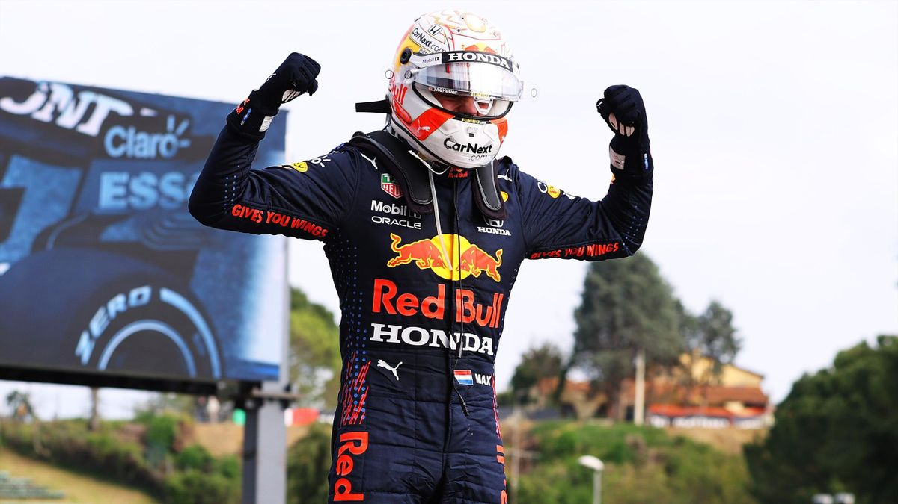
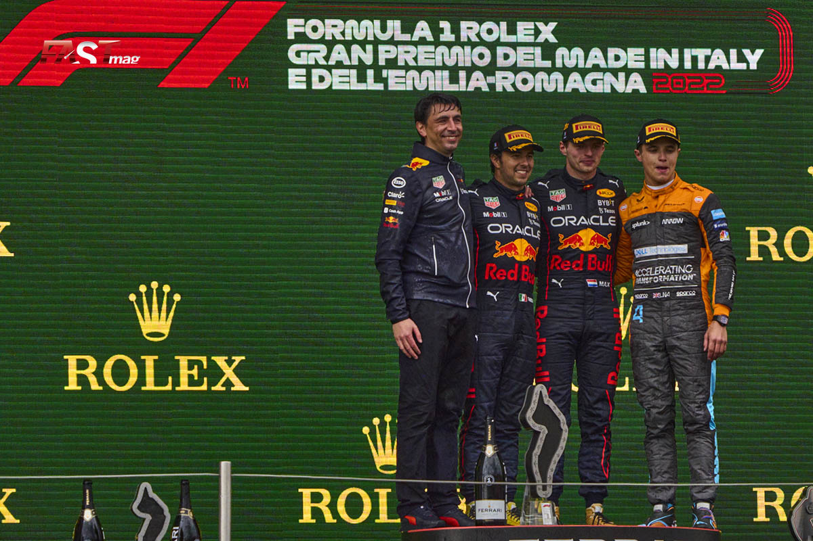

- NOTICIAS
- CALENDARIO
- MUNDIAL
- EQUIPOS Y PILOTOS
MAX SE QUEDO CON TODO EN IMOLA
El piloto Neerlandes y actual campeon del mundo consiguio este fin de semana su segundo grand chelem en el gran premio de la emilia romagña tras un fin de semana para el recuerdo.
Comenzo el viernes marcando el crono mas rapido de la Q3 en una dramatica clasificacion bajo lluvia en la cual por una bandera roja Charles LeClerc, quien actualmente lidera el campeonato, no pudo establecer un mejor registro.
El sabado Max se hizo con la carrera sprint tras una apasionante lucha cuerpo a cuerpo con el monegasco de ferrari y asi obtuvo los primeros 8 puntos del fin de semana
Ya el dia domingo en la carrera principal del gran premio, Verstappen tomo el liderato al inicio de la carrera y lo mantuvo hasta el final de la carrera ,liderando cada una de las vueltas.
De esta forma, Max obtuvo su segundo "Grand Chelem", el anterior habia sido en el gran premio de austria el año pasado
El podio lo completaron su compañero de equipo, Sergio Perez, y Lando Norris que llevo su McLaren hasta la 3ra posicion.
